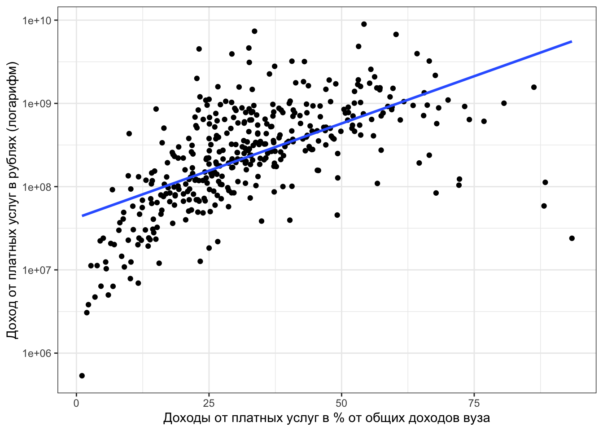
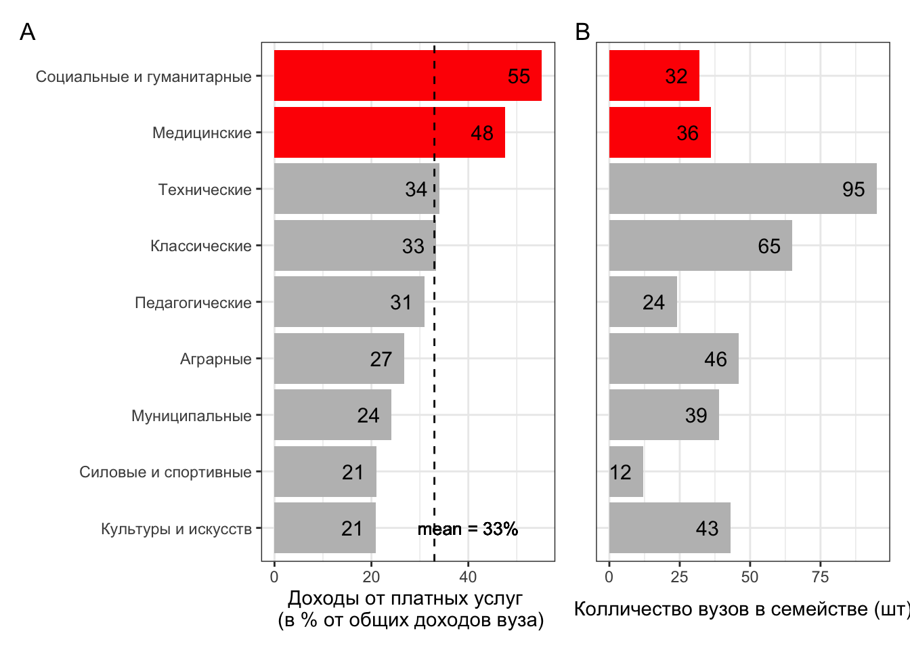
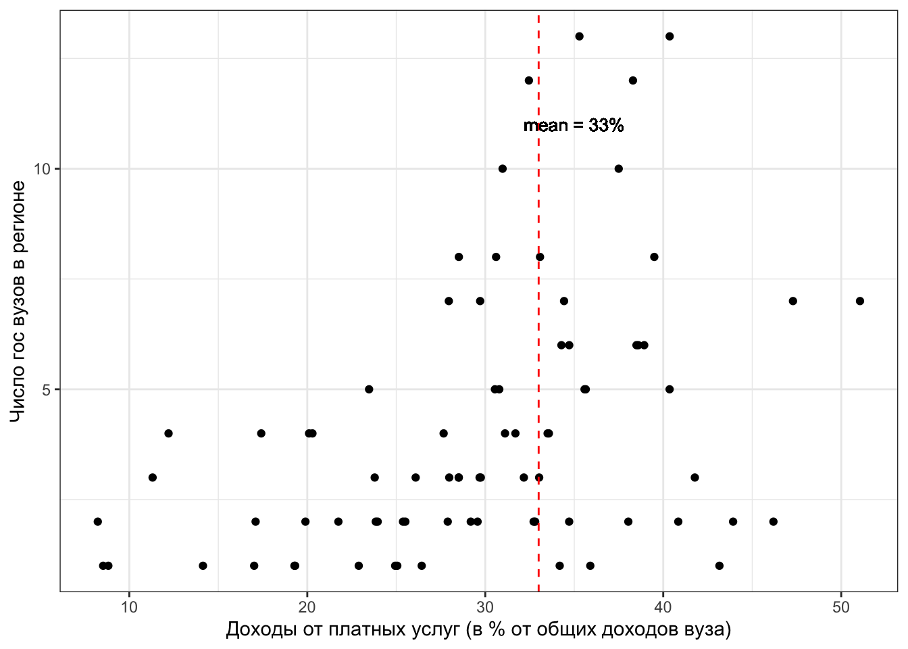
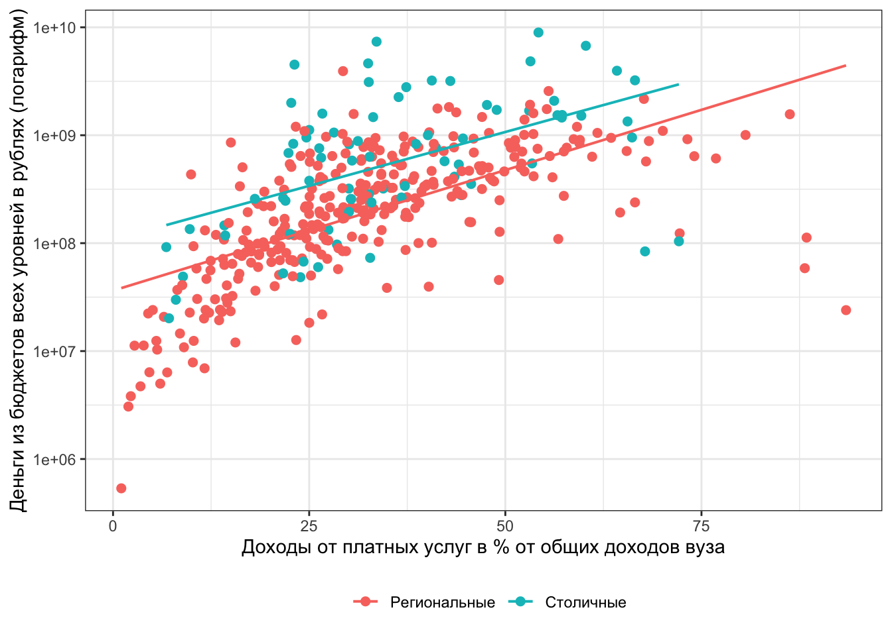
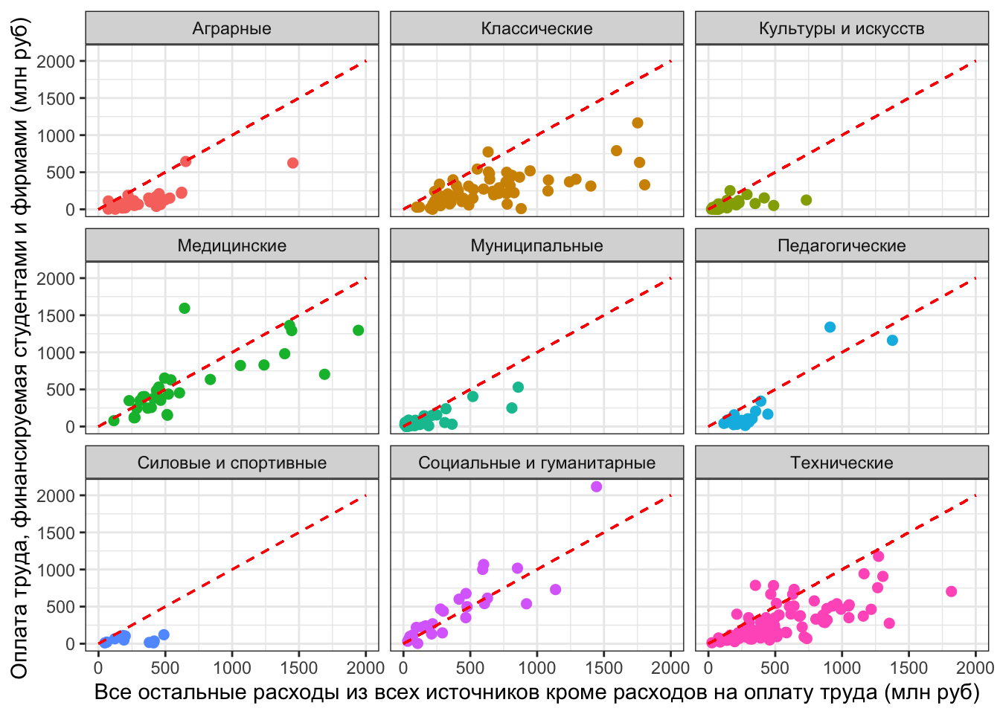

2 Доходы вузов
2.1 Доходы в абсолютных значениях и долях
Посмотрим на доходы вузов абсолютных цифрах и в долях. Очевидно, что 30% от общих доходов для крупного столичного вуза и для региональной академии культуры это не одна и та же сумма в рублях. В первой десятке по абсолютным значениям мы видим заметный разброс (Табл. 4). К примеру, один из лидеров по абсолютным значениям – Высшая школа экономики с 7363 млн. руб внебюджетных доходов от услуг населению и фирмам, но в процентах это лишь треть от всех доходов вуза (34%), тогда как для РУДН сопоставимая сумма в рублях составляет почти две трети доходов (60%).
2.1.0.0.1 Таблица 4. Топ-10 вузов по доходам от платных услуг населению и фирмам (в рублях) с указанием какую долю составляют эти доходы от общих доходов
Если мы посмотрим топ вузов по доле внебюджетных доходов (таблица 6), то заметно, что большую часть из них составляют вузы социально-экономического профиля, что помогает привлекать студентов на привлекательные специальности по экономике, менеджменту, маркетингу и юриспруденции. Этот паттерн сохранится, если мы проанализируем отдельно 25% вузов с самыми высокими долями средств, заработанных самостоятельно.
2.1.0.0.2 Таблица 6. Топ-10 вузов с самой большой долей доходов от оказания платных услуг населению и фирмам
Если мы посмотрим не на десятку лидеров, а на все вузы в нашей выборке, то мы увидим прямую зависимость (Рис. 3). Вузы, которые оперируют бóльшими суммами в рублях имеют бóльшую долю доходов от платных услуг. Вузы, которые оперируют меньшими суммами будут сильнее зависеть от государственных денег и хуже зарабатывать самостоятельно.
2.1.0.0.3 Рис. 3. Связь доли доходов от платных услуг с абсолютным их выражением в рублях

2.2 Что объединяет вузы, у которых получается зарабатывать самостоятельно: семейства
Первое что мы сделаем – это разобьем наши вузы по типам, взяв за основу девять семейств (Рис. 4).
2.2.0.0.1 Рис. 4. A – Доходы от платных услуг населению и фирмам по типам вузов; В – Кол-во вузов в семействе

У социальных и гуманитарных вузов в среднем доля доходов от оказания платных услуг населению и фирмам составляет 55%, у медицинских – 48% . Хуже всего “зарабатывают” силовые, спортивные, культуры и искусств. Самые многочисленные семейства вузов имеют треть своих доходов от платных услуг населению и фирмам – технические и классические вузы.
2.2.0.0.2 Рис. 4. Доходы от платных услуг населению и фирмам: среднее по семействам

Рассмотрим семейства более детально – в Таблице 5 представлены описательные статистики для всех семейств по доходам от платных услуг.
(ОКРУГЛИ СРЕДНЕЕ ДО ОДИНАКОВОГО ЗНАКА ПОСЛЕ ЗАПЯТОЙ как на рисунке 4 выше)
2.2.0.0.3 Таблица 5. Доходы от платных услуг населению и фирмам по типам вузов (в % от общих доходов вузов)
Практически для всех типов вузов медиана близка к среднему значению – внутри семейств нет сильно заметного разброса значений по !внебюджетным! доходам (за исключением муниципальных вузов). Если в среднем социально-гуманитарные вузы зарабатывают больше остальных вузов, то это свойственно почти всем вузам этого типа (доля больше 45% собственных доходов характерна для 75% социально-гуманитарных вузов). Также как, если аграрные вузы в среднем получают вне бюджета не больше 27% доходов, то это свойственно почти 75% вузов.
Рассмотрим далее первый квартиль вузов, то есть на 25% вузов, которые самостоятельно зарабатывают больше остальных 75%. Мы упорядочили все вузы по размеру внебюджетных доходов и далее анализируем 25% вузов по семействам, у которых оказались самые высокие цифры. Из Таблицы 4 мы видим, что более 70% медицинских и социально-гуманитарных вузов входят в первый квартиль по доле доходов, заработанных самостоятельно. Для остальных семейств характерна картина, когда лишь для небольшого количества вузов доля собственных доходов будет значимо высока. Ни один силовой и спортивный вуз не попал, вузы культуры и искусств представлены только одним.
2.2.0.0.4 Таблица 7. Доходы вузов от услуг населению и фирмам (в % от общих доходов): семейства
2.3 Что объединяет вузы, у которых получается зарабатывать самостоятельно: регионы
Проанализируем различия по двум группам: (1) столичные вузы – Москва и Санкт-Петербург и (2) региональные вузы – остальные регионы России. Повторим тот же график как на Рис. 1, но с разбивкой на эти две группы.
2.3.0.0.1 Рис. 6. Связь доли доходов от платных услуг с абсолютным их выражением в рублях по группам регионов

Мы видим на рис. 6 ожидаемый результат – облако московских и петербургских вузов в основном перемешано с облаком региональных, но вся верхняя область этого облака преимущественно голубого цвета – это столичные вузы. То есть, когда мы говорим о топе вузов с самыми большими доходами от оказания услуг населению (в рублях), то это Москва и Санкт-Петербург. Но при этом вся правая и не самая верхняя часть – это региональные вузы, что означает, что среди региональных вузов больше тех вузов, для которых внебюджетные деньги – это главный доход.
В нашей выборке представлены государственные вузы из 79 регионов России. Нельзя сказать, что средний столичный вуз чем-то принципиально отличаются от среднего регионального по способности зарабатывать на платных услугах населению и фирмам. Тем не менее, мы можем сказать, что в ряде регионов мы наблюдаем сильное отклонение от среднего значения по стране. Например, в Краснодарском крае вузы в среднем получают 51% дохода от оказания платных услуг (напомним, что среднее по стране – 33%, медиана – 30%).
2.3.0.0.2 Таблица 5. Топ-10 регионов с самой большой долей доходов от оказания платных услуг населению и фирмам
Посмотрим на регионы, вузы которых меньше всего зарабатывают на платных услугах населению и фирмам. Например, в нашей выборке есть два вуза из Кабардино-Балкарской Республики, которые в среднем самостоятельно зарабатывают только 8.2% от своих общих доходов.
2.3.0.0.3 Таблица 6. Топ-10 регионов с самой маленькой долей доходов от оказания платных услуг населению и фирмам
У нас есть регионы, в которых мало государственных вузов, при этом такие регионы мы встречаем и в Таблице 5 и в Таблице 6. То есть, мы знаем примеры, когда регион сам по себе небольшой (в нем мало вузов), но при этом вузы в нем успешно получают доход от оказания платных услуг. Мы знаем примеры, когда регион также небольшой, но все доходы вузов в нем формируются преимущественно за счет бюджета. Среди крупных регионов, в которых много вузов, мы не найдем такой регион, в котором вузы преимущественно получают деньги только от бюджета. Другими словами, мы видим на данных некую государственную оптимизацию – «у вас мало вузов в регионе – деньги выделим в любом случае; у вас много вузов в регионе – мы не собираемся каждый из них полностью обеспечивать бюджетными деньгами». Если попробовать это визуализировать, то на Рис. 7 об оптимизации нам говорит полностью пустой верхний левый угол. То есть, у нас нет региона, в котором много вузов и при этом они не умеют зарабатывать самостоятельно.
2.3.0.0.4 Рис. 7. Связь числа вузов в регионе и доли доходов от платных услуг в этих вузах (без Москвы и Спб)
